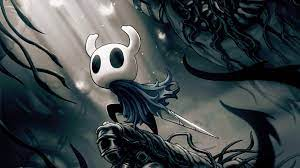

Hollow Knight
Hollow Knight is a classically styled 2D action adventure across a vast interconnected world. Explore twisting caverns, ancient cities and deadly wastes; battle tainted creatures and befriend bizarre bugs; and solve ancient mysteries at the kingdom's heart.
Indie
Actie
Avonturenspel

Systeemeisen
Besturingsysteem: Windows 7 (64bit)
Processor: Intel Core 2 Duo E5200
Geheugen: 4 GB RAM
Grafische kaart: GeForce 9800GTX+ (1GB)
Direct X: Versie 10
Opslagruimte: 9 GB